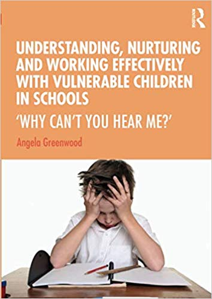

Angela Greenwood — Educational Psychotherapist
This website is mainly oriented towards my new book, 'Understanding, nurturing and working effectively with vulnerable children in schools’
(Routledge 2020)
.
In these times of increasing pressure and stress many classes, especially in inner city schools, have a small number of students who just can’t learn and respond to good teaching. They can cause huge anxieties for staff. Their behaviour disrupts relationships and the learning of others - sometimes stretching the capacities of the whole school.
When I was a SENCO this realisation eventually led me to train as an Educational Psychotherapist with The Caspari Foundation in London (see ‘Origins’ above)

'Understanding, nurturing and working effectively with vulnerable children in schools?' arose out of my experience:
offering training and clinical supervision in schools and privately - including a Pupil Referral Unit
working with teachers, school staff, foster and adoptive agencies and parents, around issues and concerns relating to their most troubled pupils and children
working as an educational psychotherapist with the most vulnerable and disturbed children in a Domestic Abuse setting, privately, and in schools
facilitating and sharing in a local Nurture staff support group
All teachers need to know how to understand and work with their more vulnerable and learning resistant children. Such understanding, and the timely and conscious use of the significant relationships that occur naturally in school, will benefit everyone. Empathy and thoughtfulness will be evoked in all children when they see the more vulnerable ones being cared for and responded to in a firm and thoughtful way. Teachers will benefit too, as the description of a ‘nurturing school’ illustrates so vividly in the final chapter.
The opportunity for teachers and school staff
The good news for teachers and schools is that whatever has developed already in a child, if they are given a secure nurturing environment and significant, attuned, thoughtful and consistent attachment relationships, even vulnerable or ‘disturbed’ children can change and grow, and already formed dysfunctional patterns can be eased and replaced, or at least overlaid, with functional ones. It may not be easy and it will take time; but it’s possible.
'Understanding, nurturing and working effectively with vulnerable children in schools’ is all about this. (see Publications above)
.
Developing trauma and attachment informed understanding and school practice around reaching and teaching vulnerable children
The concerns and approach outlined in my book “Understanding, nurturing and working effectively with vulnerable children in schools” and in the related posters, are around the opportunity school staff have to make a difference with vulnerable and dysfunctional children.
Summary of concerns and hopes
Concerns
Without help dysfunctional attachment patterns can cycle through generations, and unintegrated trauma can trigger panic and disruptive reactions.
In some cases ‘hurt and hurting children’ are becoming excluded from education, risking mental health and societal problems later on.
The decrease in funding for school staff over recent years - leading to cuts in support staff for our most needy and vulnerable children.
Without help the knock-on effect of these can lead to teacher stress - inhibiting learning and teaching, and teacher retention.
The tendency of stressed school staff resorting to quick punitive responses to the behaviour of their most challenging children, can exacerbate their negative expectations, defensiveness and self-images.
The lack of understanding and training school staff are given in both initial and Inservice training in this increasingly important area.
Hopes
To get a Trauma and Attachment Informed understanding and the consequent thoughtful, practical and relational approach into initial and in-service Teacher Training, and into Teacher Assistant, Educational Psychology, SLT and SENCO training too, and into Ofsted expectations.
That school staff understand behaviour as unconscious communication and respond with curiosity, empathy and firm boundaries.
School counsellors/therapists available in every school.
Well trained and selected Teacher Assistants working with vulnerable children are included in the confidential knowledge they need to know, and supported by teachers and managers.
Clinical supervision available for those working with the most dysfunctional children.
Adequate funding for these initiatives and for support staff for our most-needy kids.
September 2023